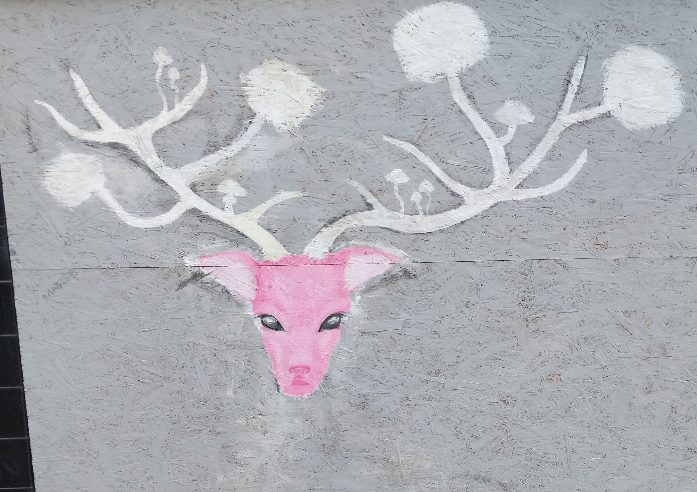

Street Art Aberdeen
Near C the Rosemount Centre, 1 Mount St, Aberdeen AB25 2RA, UK
Photo:

Location:
Year created:
Unknown
Medium:
Spray
State:
OK
Other art nearby, the 20 closest...
Instagram image